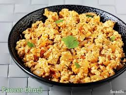

Paneer Bhurji
Home

Description
Paneer Bhurji is a healthy
protein enriched dish which
can fulfill your daily protein
needs just in a single bowl.
It also contains calcium and
it tastes delicious.It's a very easy
recipe which only contains a few
steps and ingredients.
Even if you do not have any
experience in cooking or has
never cooked, don't worry I got you.
Ingredients
- Paneer
- Salt
- Coriander
- Seasonings
- Onion/Green onion
- Tomato(As per preference not necessary)
- Refined oil
Steps
- Take a pan and add some oil in it and heat it in low flame.
- Mash your paneer in a bowl.
- In a medium heated oil add your onions and cook it till it turns light brown and put tomatoes in it if you preferred it.
- After cooking them both add your seasonings and salt according to your taste.
- After all these steps put your paneer in it and give them a stir and cook it for 5-10 minutes.
- Your delicious protein enriched diet is ready.